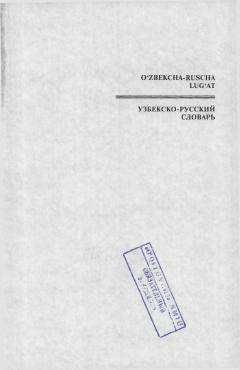

OLBoshlang'ich sinf o'quvchilari uchun mo'ljallangan 2216 so'zli o'zbekcha-ruscha lug'at.
Ushbu lug'at boshlang'ich sinf o'quvchilari uchun maxsus ishlab chiqilgan bo'lib, 2216 ta eng zarur so'zni o'z ichiga oladi. Lug'at o'quvchilarning nutqini boyitish va rus tilini o'rganishda ko'maklashish maqsadida rasmlar va sodda tushuntirishlar bilan boyitilgan.